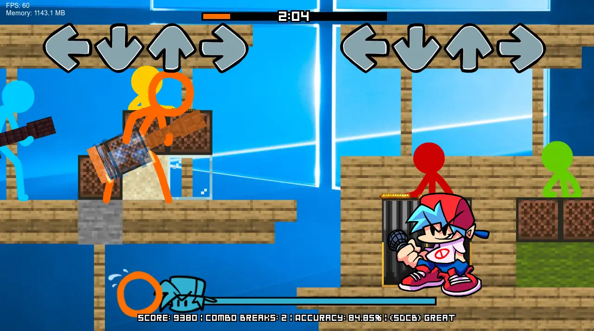
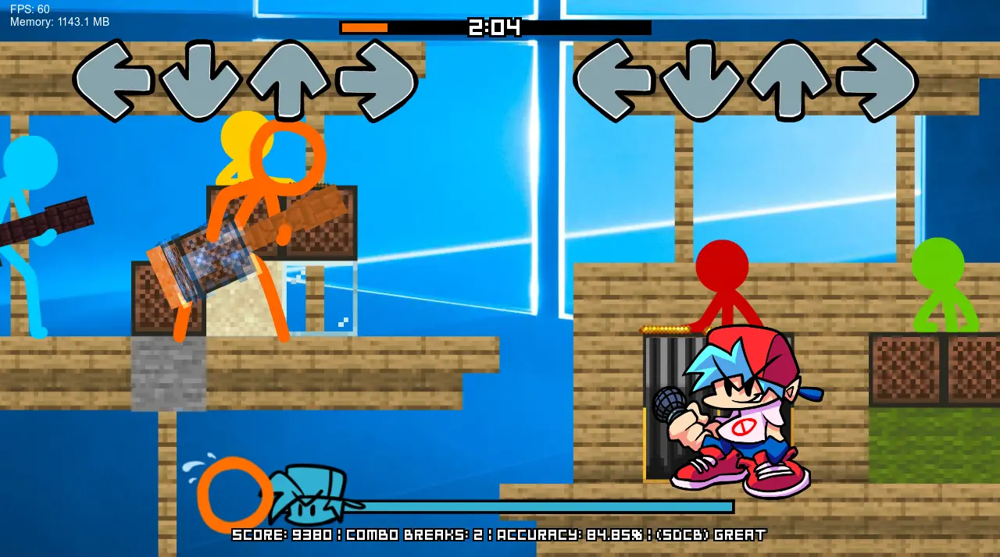
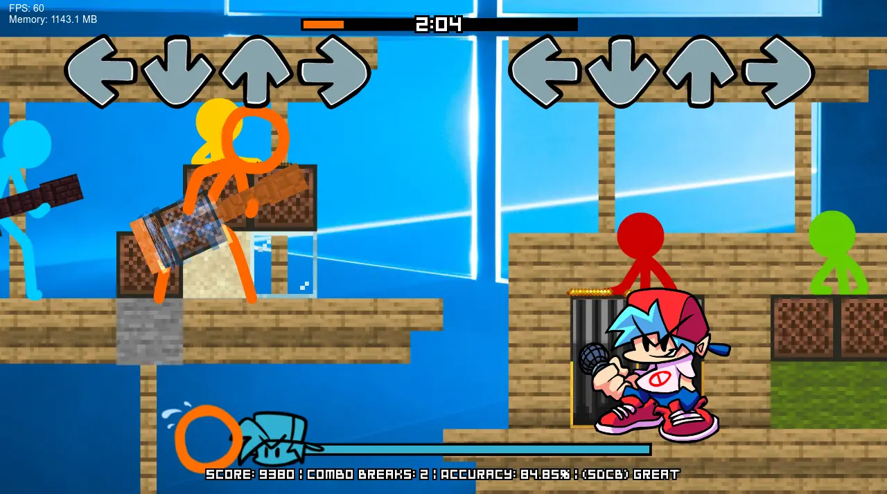

Face off against the world's most popular stick figures in a whole new way!
When our protagonists discover a strange new game on ALANSPC, it opens the door for a new adventure full of.... rapping?
SO.... WHAT... IS THIS?
Animation VS. Friday Night Funkin' (or AVFNF or even AVF for short), is a nonprofit Friday Night Funkin' mod about the works of Alan Becker & those inspired by him.
This is the 2nd update to the full mod which released in October 2022, which came after the demo which released earlier that year.
All characters & works used in the mod are creations of Alan Becker, Funkin' Crew, Mojang, etc.
AVFNF: EPISODE 2 - WHAT'S IN STORE
We've got a lot in store for this next update.
For starters, almost every song from the last version is being remastered. Some by their original composers like Vengeance & Fallen, while other classics get remade by new faces like Repeater.
In terms of new stuff, you won't be disappointed either. We have over 30 all new tracks, bringing the total song count to around 41! A lot of our songs have all new mechanics which adds an extra challenge. With these new songs, we're trying to improve the quality & overall, create an experience that leaves V1 in the dust. That, and we have an intriguing story tying most of it together.
All in all, Episode 2 is set to be the ultimate Alan Becker Friday Night Funkin' experience.
NEW OPPONENTS
Don't forget this mod has over 40 songs. Did you really think all of them would be the same old guys?
Many new challengers will face you such as iconic Alan Becker characters, Purple & the powerful King Orange. As well as other fan-made characters like The Deserved One. Any of your favorite characters could appear in the mod. You'll just have to wait & see. ;)
SCREENSHOTS

TRAILER
MOD INTRO
CLOSING STATEMENTS
Thank you for being patient with us. We're all working as hard as possible to get the mod done and make it release in the best state it can. We don't know when the next update will be released, but chances are, it'll probably be sometime in late 2025. From the bottom of our hearts, thank you for all the support you've given us. We'll make sure V2 will be worth the wait.


 
